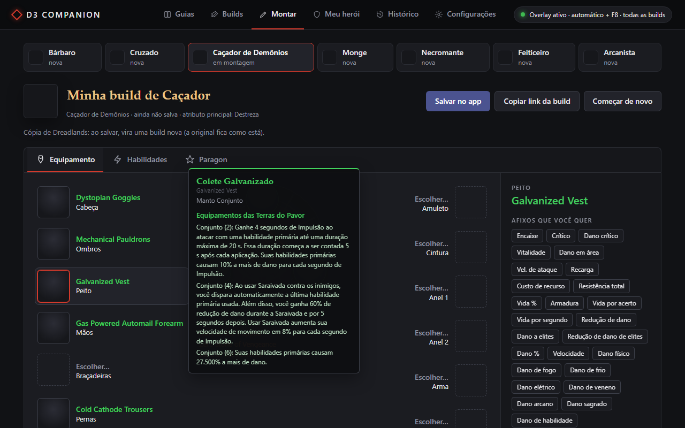

Selo no jogo
Ao lado da dica do item aparece um selo: serve, serve por enquanto (pra upar) ou não serve, com os afixos que tem e os que faltam.
Grátis · Windows 10 e 11 · Código aberto
Passe o mouse no item e aperte F8. O D3 Companion compara com a build do Maxroll que você escolheu e diz o que o item tem, o que falta e o que trocar no Místico.
Carregando a versão…
Fiendish Grips
Ancient Set Gloves
Fiendish Grips
✅ Unhallowed · item da build
Tem: Destreza ✓ Vitalidade ✓ Crítico ✓
Falta: Dano crítico ✗
Dica: no Místico, troque "Attack Speed" por Dano crítico.

Ao lado da dica do item aparece um selo: serve, serve por enquanto (pra upar) ou não serve, com os afixos que tem e os que faltam.
Escolha a classe e o guia, ou cole o link de qualquer build do Maxroll. O app traz itens, habilidades, runas e paragon, e já passa a usar a build no atalho.
No app (aba Montar) ou aqui no site, sem instalar nada: itens, gemas, cubo de Kanai, habilidades com runas e paragon, com os dados do jogo. Passe o mouse num item pra ver o que ele faz. Abrir o montador.
Digite sua BattleTag: o app pega o equipamento do seu herói na API oficial da Blizzard e mostra, peça por peça, o que já bate com a build.
Em que nível libera cada habilidade e runa da build, e onde pôr os pontos de paragon, na ordem do jogo.
Diz qual afixo vale trocar no Místico pra completar o item. Se você já trocou um, ele sabe que só esse pode ser trocado de novo.
Lê a dica do item como você lê: pela tela. Não mexe na memória nem nos arquivos do jogo.
Abra o instalador, clique em Avançar e Instalar. O app aparece no Menu Iniciar. O leitor de texto (OCR) já vem junto.
Cole o link de um guia do Maxroll (ou escolha um na aba Guias). A build é importada e fica salva no app, só as que você usa.
Com o jogo em tela cheia em janela, passe o mouse no item e aperte F8. O selo aparece ao lado da dica.
Grátis, sem cadastro e sem propaganda.
A soma SHA-256 de cada versão fica na página da versão no GitHub.
O app não tem assinatura digital (ela é paga). Na primeira vez aparece "O Windows protegeu o computador": clique em Mais informações e em Executar assim mesmo.
Quer conferir antes? O código inteiro está no GitHub, e o instalador é gerado por um script que está lá
(ferramentas/empacotar.py).
Os ícones, os nomes em português e a aba "Meu herói" usam a API oficial da Blizzard, que pede uma chave
gratuita sua. O LEIA-ME.txt na pasta do app mostra como criar. Sem a chave, o selo e as builds funcionam do mesmo jeito.
%APPDATA%\D3 Companion\.env), e a janela do app nem consegue lê-la.O app só olha a tela, como uma gravação de vídeo, e não toca no jogo. Mesmo assim, ele não é da Blizzard: use por sua conta.
Use tela cheia em janela (Windowed Fullscreen) nas opções de vídeo do Diablo III. Em tela cheia exclusiva o Windows não deixa outro programa desenhar por cima.
Inglês: as builds do Maxroll e a leitura da dica usam os nomes em inglês. A janela do app pode ficar em português ou em inglês (em Configurações).
Só o próprio app: o instalador põe ele no Menu Iniciar, sem pedir administrador, e ele sai pelas Configurações do Windows. Prefere sem instalar? A versão também tem um zip. Seus dados ficam em %APPDATA%\D3 Companion, então atualizar ou desinstalar não apaga nada.
Pode: em Configurações, ex.: Ctrl+F8 ou Alt+Q. Se outro programa já usa a tecla, o app avisa quais estão livres.